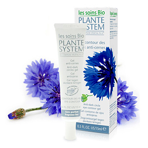

Veido kremai moterims ir vyrams internetu | pigu.lt Riešutų kremas, ne tik puikus desertas, bet ir sotus užkandis (aukšta maistinė vertė!), puikiai tinkantis prieš ar po treniruotės. Pusryčiams ar užkandžiaujant tepkite ant vaisių, trapučių, baltos duonos, maišykite į košes, pieno ir ledų kokteilius, arba tiesiog kabinkite šaukštu prie kavos/arbatos.
HIDRADERM HYAL VEIDO KREMAS, 50 ml - Medexy Betnovate yra baltos spalvos kremas, tiekiamas minkšto aliuminio tūbelėse, iš vidaus padengtose laku, kurio pagrindą sudaro epoksidinė derva, užsukamose polipropileno dangteliu. Vienoje tūbelėje yra 15 g kremo. Registruotojas ir gamintojas. Registruotojas. UAB „GlaxoSmithKline Lietuva“ Ukmergės g. 120. LT-08105 Vilnius. Lietuva ...
Veido kremai | Camelia - Camelia Renata Ničajienė (sezoninėvirtuvė.lt): Šis gardus ir maistingas citrininis kremas yra ne kas kitas, o tas pats garsusis britiškasis lemon curd.Tik šį kartą jį ruošiau visai be cukraus, su medumi, o įprastus vištų kiaušinius pakeičiau maistingesniais putpelių kiaušiniais.
Veido kremai | Kosmetika | newcrush Veido kremai internetu pigiau! Veido kremai sausai, riebiai, mišriai odai, nuo raukšlių, su vitaminu C, spf, hialurono rūgštimi ir daugelis kitų už gerą kainą!
Kremai - ODA - pro Kremas – dviejų nesimaišančių skysčių (aliejaus ir vandens) sistema. Tam, kad ši sistema būtų stabili ir laikui bėgant neišsisluoksniuotų, naudojamos tam tikros medžiagos, vadinamos emulsikliais. Emulsikliai taip pat gali padėti kreme esančioms medžiagoms geriau prasiskverbti į epidermį. ODA kremų gamyboje naudojami tik natūralūs aliejai, aukštos kokybės ekstraktai ...
Riešutų kremas - Saldukas - Riešutai Jums Plikytas kremas pravers įdarant eklerus, tartaletes, profiteroles, sluoksniuotus krepšelius ir pan. Labai klasikinis ir labai skanus, tik svarbu sekti žingsnius, kad neišsivirtum kiaušinienės ;) Klasikiniam plikytam kremui (creme patiserie) paruošti jums prireiks:

+370 612 04420 info@riesutaijums.lt Palikite pranešimą Facebook Instagram YouTube Naujausios prekės Populiariausios prekės Parduotuvė Dovanų kuponas Informacija Apmokėjimas, prekių pristatymas ir grąžinimas Apie mus Kontaktai Dažniausiai užduodami klausimai Taisyklės Prisijungti/Registruotis Naujausios prekės Populiariausios prekės Parduotuvė Dovanų kuponas Informacija Apmokėjimas, prekių pristatymas ir grąžinimas Apie mus Kontaktai Dažniausiai užduodami klausimai Taisyklės Prisijungti/Registruotis Naujausios prekės Populiariausios prekės Parduotuvė Dovanų kuponas Informacija Apmokėjimas, prekių pristatymas ir grąžinimas Apie mus Kontaktai Dažniausiai užduodami klausimai Taisyklės Prisijungti/Registruotis Riesutai Jums Riešutų kremai
Riešutų kremai
Riešutų kremas – puikaus skonio itin maistingas produktas. Jame, kaip ir pačiuose riešutuose itin daug baltymų, kurie yra svarbiausia raumenų „statybinė“ medžiaga. Tai gana riebus produktas – riebalai sudaro apie 40 procentų riešutų kremo sudėties. Tačiau nereikia dėl to nuogąstauti, nes tai nesotieji augaliniai riebalai, kurie organizmui yra naudingi. Riešutų kremas yra labai kaloringas, todėl visai nedidelis jo kiekis suteiks soties jausmą ir aprūpins energija. Dėl tos pačios priežasties, patariama šiuo skanėstų mėgautis saikingai. Pats populiariausias yra žemės riešutų kremas. Mėgaukitės juo tiesiog užsitepę ant duonos ar skrebučio. Šis skanėstas labai tinka košių ir kokteilių gardinimui. Žemės riešutų kremą taip pat galite naudoti kepiniams – jis atstos cukrų ir suteiks išraiškingo riešutų skonio. Migdolų riešutų kremas pasižymi subtiliu skoniu ir puikiu aromatu. Šis kremas suteiks ypatingo skonio košėms, desertams, varškei. Migdolų kremas puikiai dera su vaisiais – obuoliais ar bananais. Ieškantiems naujų skonių, rekomenduojame išbandyti švelnia konsistencija ir subtiliu skoniu pasižymintį anakaridžių kremą. „Riešutai Jums” rasite išskirtinės kokybės įvairių riešutų kremo.
Anakardžių kremas 1 kg
17.99 € 1 kg produkto kiekis: Anakardžių kremas 1 kg Į krepšelį
Balto šokolado kremas PROTEINELLA 200 g
3.69 € 200 g produkto kiekis: Balto šokolado kremas PROTEINELLA 200 g Į krepšelį
Dviejų riešutų kremas 1 kg
18.99 € 1 kg produkto kiekis: Dviejų riešutų kremas 1 kg Į krepšelį
Lazdynų riešutų kremas 1 kg
13.99 € 1 kg produkto kiekis: Lazdynų riešutų kremas 1 kg Į krepšelį
Migdolų kremas 1 kg
15.99 € 1 kg produkto kiekis: Migdolų kremas 1 kg Į krepšelį
Riešutų ir kakavos kremas PROTEINELLA 200 g
3.69 € 200 g produkto kiekis: Riešutų ir kakavos kremas PROTEINELLA 200 g Į krepšelį
Sūrios karamelės kremas PROTEINELLA, 200 g
3.89 € 200 g produkto kiekis: Sūrios karamelės kremas PROTEINELLA, 200 g Į krepšelį
Žemės riešutų kremas traškus 1 kg
7.39 € 1 kg produkto kiekis: Žemės riešutų kremas traškus 1 kg Į krepšelį
Akcijos (55) Naujausios prekės (108) Populiariausios prekės (20) Riešutai (75) Anakardžių riešutai (8) Migdolai (14) Lazdynų riešutai (6) Pistacijos (2) Graikiniai riešutai (3) Karijų riešutai (2) Žemės riešutai (11) Kokosų riešutai (6) Riešutai su kevalu (4) Karamelizuoti riešutai (18) Riešutai apvalkale (12) Mišiniai su riešutais (10) Kiti riešutai (3) Riešutų kremai (8) Džiovinti vaisiai ir uogos (55) Džiovinti obuoliai (2) Džiovintos figos (2) Datulės (4) Razinos (6) Džiovinti abrikosai (4) Džiovinti mangai (3) Džiovinti bananai (2) Džiovinti ananasai (2) Džiovintos papajos (1) Džiovinti persikai (2) Džiovintos vyšnios (2) Džiovintos uogos (7) Be pridėtinio cukraus (28) Mišiniai su džiovintais vaisiais (11) Kiti džiovinti vaisiai (9) Mišiniai (37) Dribsnių mišiniai (10) Sėklų mišiniai (3) Mišiniai su džiovintais vaisiais (11) Mišiniai su riešutais (10) Saldumynų mišiniai (8) Rinkiniai (18) Valgomosios sėklos (21) Chia sėklos (2) Bolivinė balanda (Kynva) (6) Saulėgrąžos (1) Kanapių sėklos (2) Moliūgų sėklos (2) Sezamo sėklos (3) Sėklų mišiniai (3) Kitos sėklos (4) Maisto ruošiniai (19) Batonėliai (21) Chalva (5) Dribsniai ir Košės (29) Avižiniai dribsniai (2) Kukurūzų dribsniai (11) Granola (2) Ryžių dribsniai (2) Kviečių dribsniai (2) Dribsnių mišiniai (10) Kiti dribsniai (5) Ekologiški produktai (24) Ekologiški riešutai ir džiovinti vaisiai (9) Ekologiškos sėklos ir kruopos (4) Kiti ekologiški produktai (11) Kruopos ir ankštiniai (45) Kuskusas (4) Ryžiai (20) Grikiai (4) Lęšių kruopos (4) Pupelės (4) Kitos kruopos (9) Prieskoniai (64) Prieskoniai paukštienai (24) Prieskoniai šašlykams (24) Prieskoniai bulvėms (10) Prieskoniai daržovėms (9) Prieskoniai padažams (24) Prieskoniai žuvies patiekalams (11) Prieskoniai maltai mėsai (22) Prieskoniai mėsai (26) Prieskoniai salotoms (18) Prieskoniai sriuboms (21) Prieskoniai makaronams (6) Prieskoniai troškiniams (18) Kiti prieskoniai (10) Pienas ir pieno gaminiai (2) Mėsa ir mėsos gaminiai (12) Alyvuogės (7) Padažai, užtepėlės ir džemai (55) Padažai (28) Užtepėlės ir džemai (28) Krekeriai ir kiti užkandžiai (26) Traškučiai (5) Kukurūzų spragėsiai (7) Krekeriai (15) Medus (7) Saldumynai (89) Šokoladas (1) Guminukai (44) Džiovinti vaisiai šokolade (9) Riešutai šokolade (22) Kiti saldumynai (17) Sirupas (22) Super maistas (8) Aliejus (8) Druska ir cukrus (11) Himalajų druska (2) Cukrus (9) Gėrimai (15) Augaliniai gėrimai (7) Kiti gėrimai (8) Kava, kakava ir arbata (32) Kava (16) Arbata (10) Kiti produktai (6) Konditerijai ir maisto gamybai (71) Dažikliai (2) Dekoravimo masės (16) Emulsijos ir skoniai (11) Kepinių ruošiniai (5) Šokoladas tirpinimui (9) Želė ir kisielius (13) Riešutų gaminiai (11) Kiti produktai (4) Liofilizuoti vaisiai ir uogos (15) Liofilizuotų vaisių ir uogų milteliai (6) Liofilizuoti vaisiai ir uogos (9) Maistas sportuojantiems (5) RiesutaiJums, 2020. Visos teisės saugomos. Kontaktai Apmokėjimas, prekių pristatymas ir grąžinimas D.U.K Taisyklės Facebook Instagram YouTube Užsiregistruokite www.riesutaijums.lt el. parduotuvėje Gaukite geriausius pasiūlymus Stebėkite savo užsakymus Prisijungti Neturite prisijungimų? Užsiregistruokite. Užsiregistruoti Jau registravotės? Prisijunkite. Pamiršote slaptažodį? Prisijunkite. Užsiregistruokite. We do not share your personal details with anyone. 0 Krepšelis ×